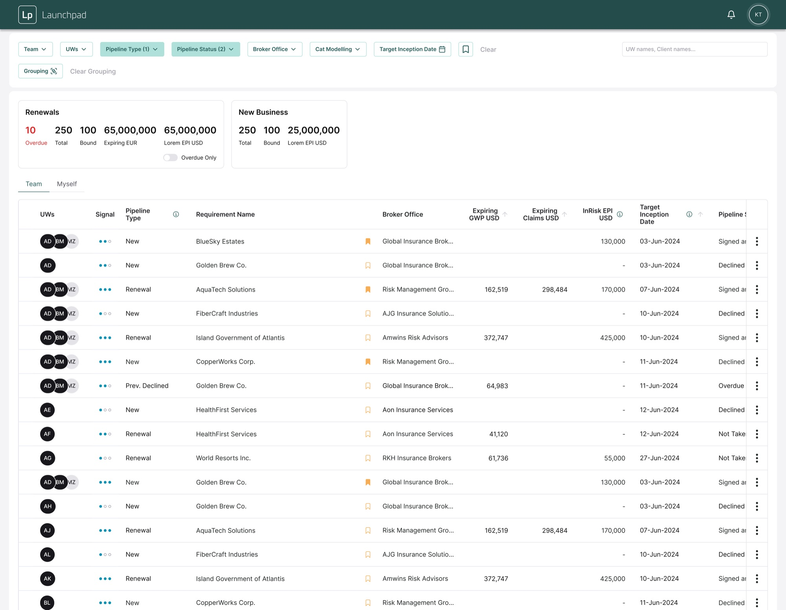
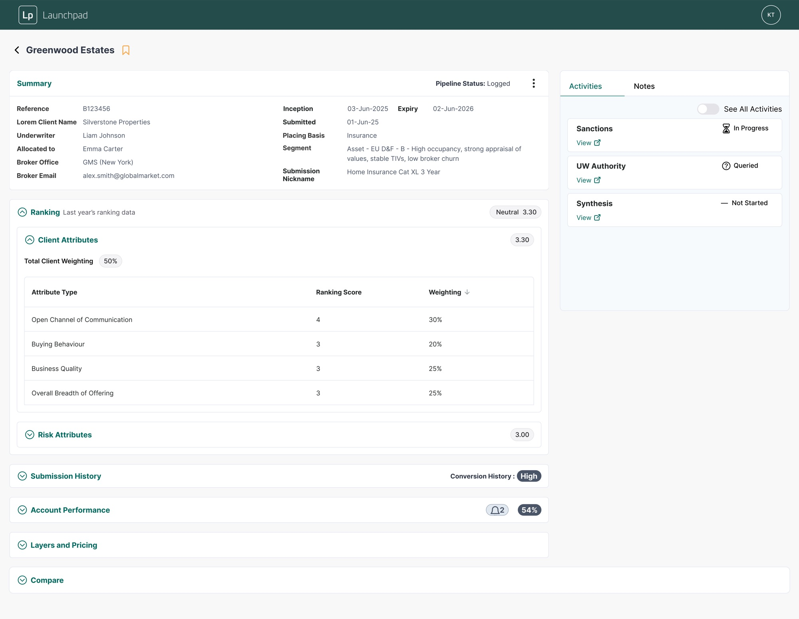
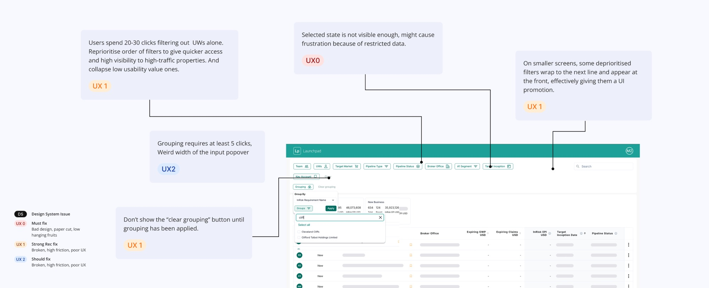
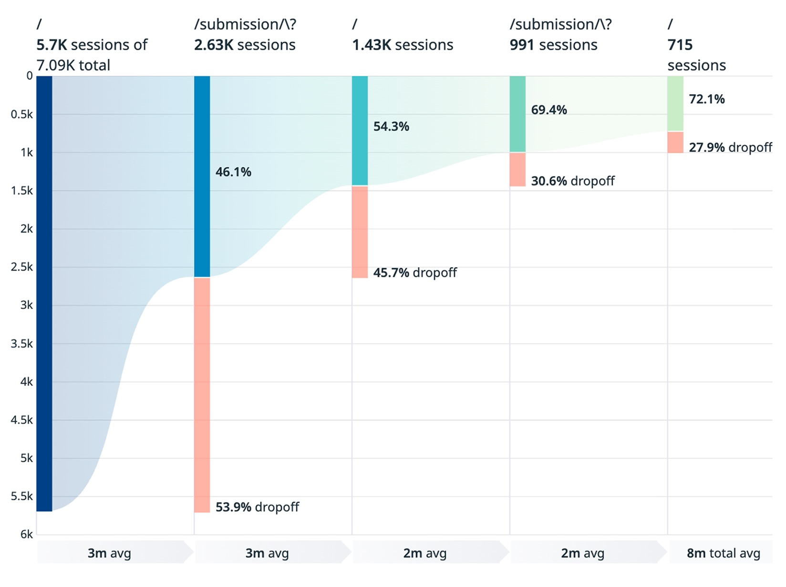
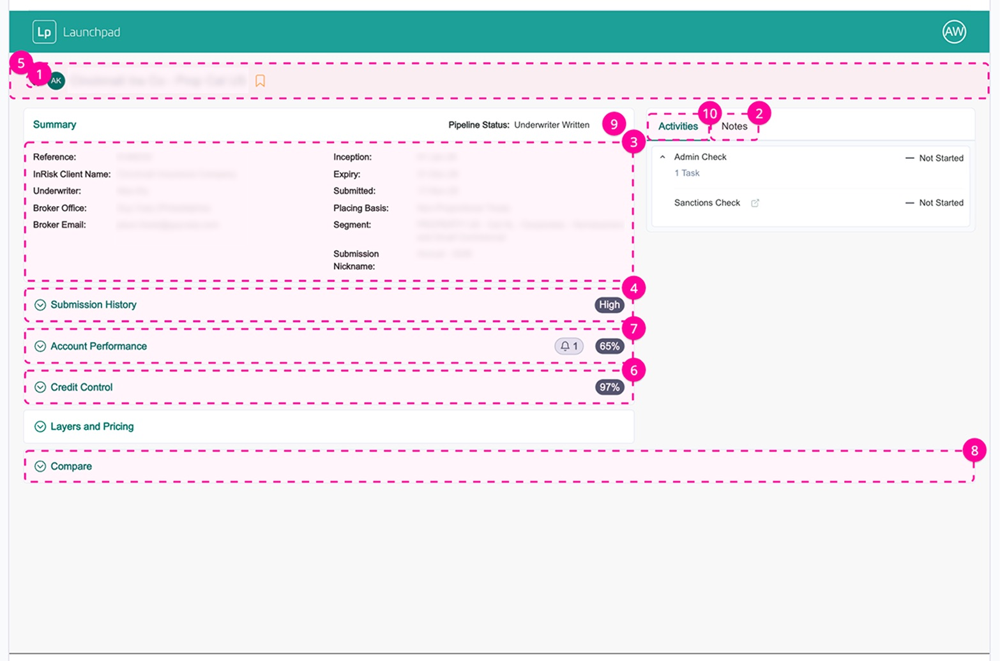
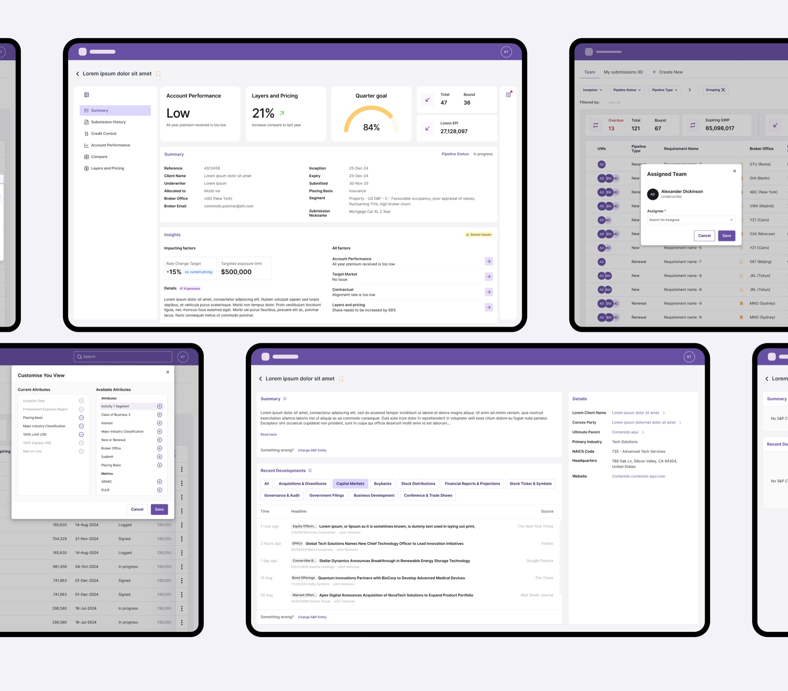
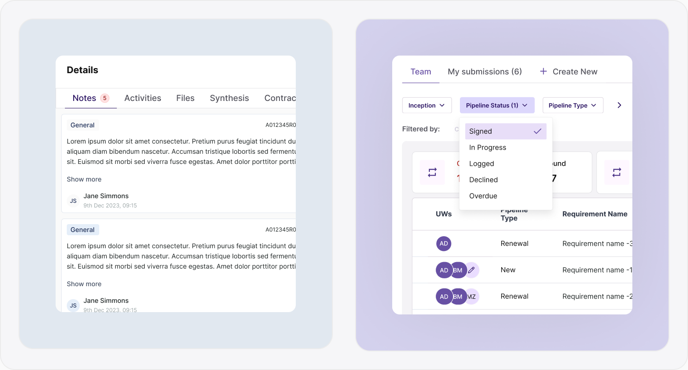

- B2B SaaS
- UX/UI
- InsurTech
- Product Design
- 2025
Launchpad
Improving underwriting efficiency through behaviour-driven design
Turning user data into a smarter navigation model + dynamic viewport to provide a better decision environment.
Overview
My Role
Product Designer (Sole Designer)
Responsibilities
- Next version of this product
- UX analysis & insight synthesis
- Interaction design
- Information architecture
- Stakeholder alignment
The Product
An internal underwriting application for insurance teams to review and triage submissions, manage workflows, and make faster and more confident decisions.
Usage at a glance
(In a typical month)
Two pages, one workflow
Underwriters work in a high-volume, high-stakes environment where speed and accuracy are essential. The application's workflow centered around two primary pages:
Pipeline View
A table-based workspace for filtering, triaging and updating submissions.

Submission Detail
A deep-dive view with full context, documents, analysis and activity history.

Start at the UX audit
As the sole product designer on the next version, I began with a structured UX audit to find where the interface was costing people time.

Understanding real usage
I analysed funnel behaviour, heat maps, feature usage and session data to understand how underwriters actually worked.
Questions for funnel analysis
- Where does decision-making actually happen?
- What information do users need during triage?

Questions for heat map
- Are users navigating efficiently, or compensating for missing context?
- How can the interface support comparison across submissions?

What the data revealed
- Only 46.1% of users entered the submission detail page
- The Back button was the most-used interaction on submission detail
- Users frequently looped between pipeline and submission detail
- Submission detail was used selectively to access specific context, especially summaries and notes
Why Back button dominance?
Fast comprehension first, depth on demand.
The pipeline view functioned as the true decision workspace, while the submission detail page acted as a short-term inspection layer.
Underwriters relied on the pipeline page for orientation and comparison, opening submission detail primarily to verify context before returning to continue their review.
Design direction
- 01Rebalanced hierarchy to surface key signals closer to the pipeline.
- 02Cut navigation overhead with pre-filtered views and filters-on-demand.
- 03A contextual Details drawer for files, AI insights, history and notes.
- 04An adaptive viewport for dense analysis without losing context.

Reducing noise, preserving control
I designed a 'filters-on-demand' system that reduced visual complexity while maintaining flexibility. Frequently used filters were prioritised, and reusable filter presets allowed underwriters to quickly re-establish context across sessions.
I then consolidated key submission information into a contextual drawer, reachable without leaving the pipeline.
Also allows users to deal with multiple submissions within few clicks.

Adaptive viewport for high-density data
To accommodate dense tables, I designed an adaptive viewport that supports uninterrupted analysis while preserving quick access to workflow context and collaboration tools.
Impact
With over 224 hours of monthly usage, even small improvements could scale quickly. Reducing just one minute per session could save over 45 hours per month across underwriting teams.
Due to roadmap priorities, this work was positioned as a future optimisation, establishing a clear, data-backed direction for improving underwriting efficiency at scale.